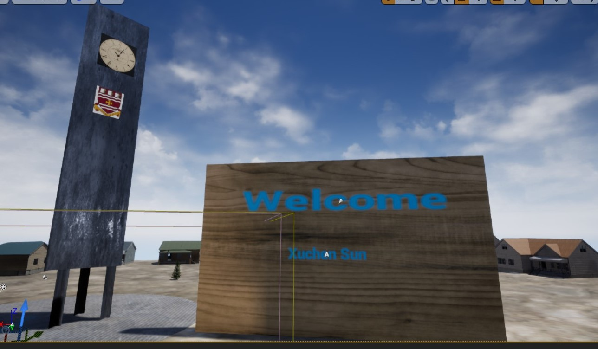
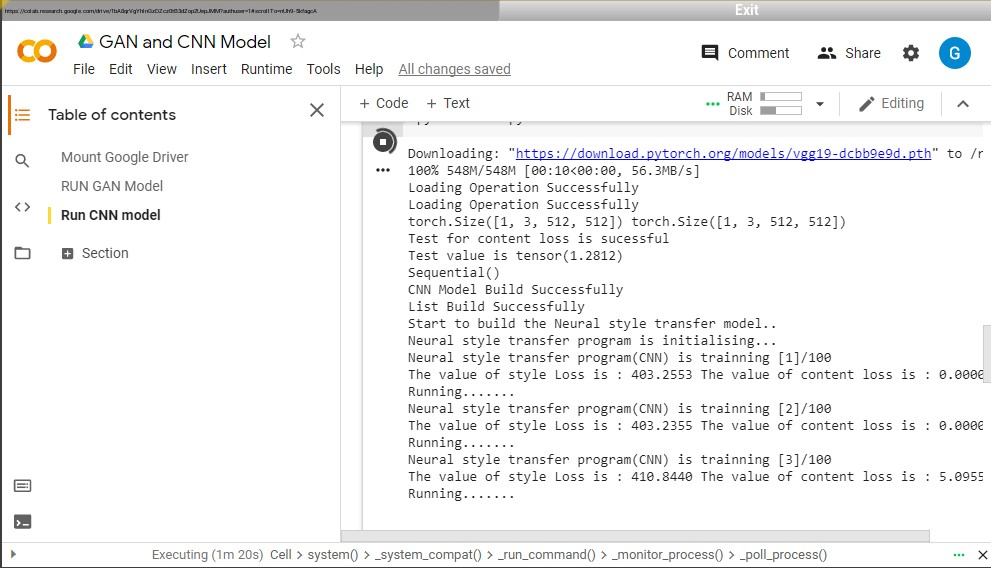
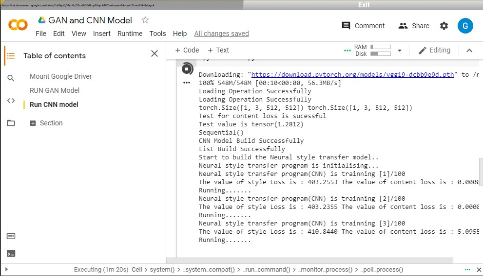

Introduction
Hello Everyone! Welcome to my website!
Providing links of my projects, I hope that the given codes have the beneficial effects for you.
Thanks for watching!
Click here to play music
Java Project
Some Java Codes for practicing: Github Link
Java Project DrawShape: Github Link
C++ Project
Front-end Learning
Game Development via UE4
UE4 project Display: Github Link
Unreal-Engine-4 Project Display
 



Machine Learning
A Fully Connected Model With 98% Accuracy After Training of 10 Epoch